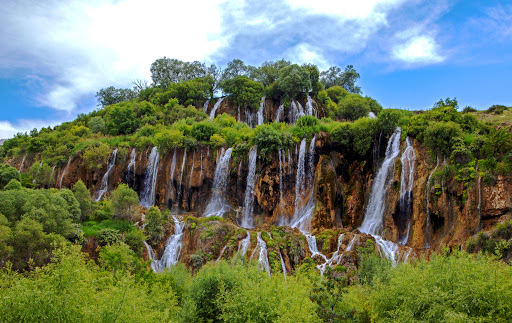

GİRLEVİK ŞELALESİ

Erzincan’ın güneydoğusunda Çağlayan Beldesi’nde bulunan Girlevik Şelalesi, doğal serinliği ve güzelliği ile ünlü bir mesire yeridir.
Suyun kışın donmasıyla oluşan sarkıtlarda tırmanıcılık, yazın soğuk sularında serinleme imkanı sunan Girlevik (Çağlayan) Şelalesi, birçok yerli ve yabancı turisti bölgeye çekmektedir.
Çağlayan Beldesi sınırları içinde yer alan Girlevik Şelalesi Erzincan merkeze 33. km uzaklıktadır.
Her mevsim farklı güzelliklere bürünen Erzincan Girlevik Şelalesi, özellikle günü birlik tatiller için tercih edilen önemli turizm merkezidir.
Erzincan’ın en önemli gezi yerlerinin başında gelen Girlevik Şelalesi dört mevsim ayrı bir güzelliğe sahip.
Tamamen doğal bir şelale olan Girlevik Şelalesi’nin suyu Munzur Dağları’nın yamacında yer alan Kalecik Köyü’nden doğan gözelerden gelmektedir.
Su dokuz ayrı gözeden çıkar ve bir dere yatağı vasıtası ile şelaleye kadar ulaşır. Şelalenin yüksekliği 30-40 m. olup, yöreye özgün taştan oluşan üç kademe halindedir.